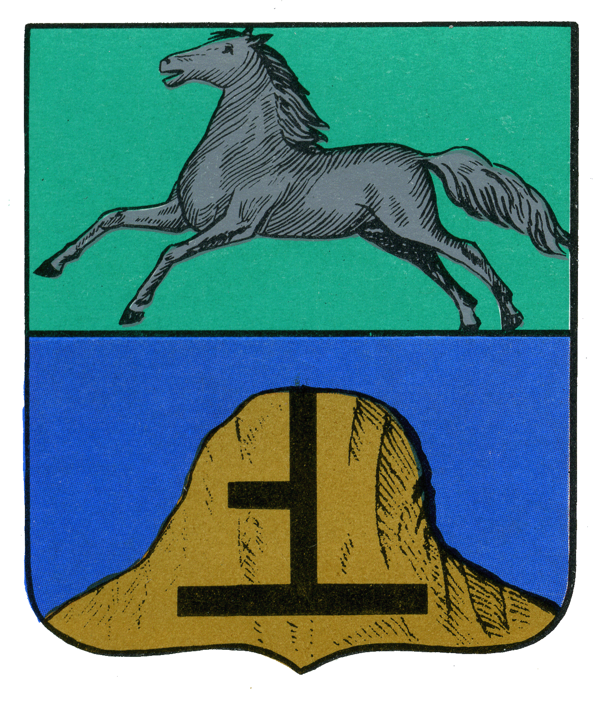
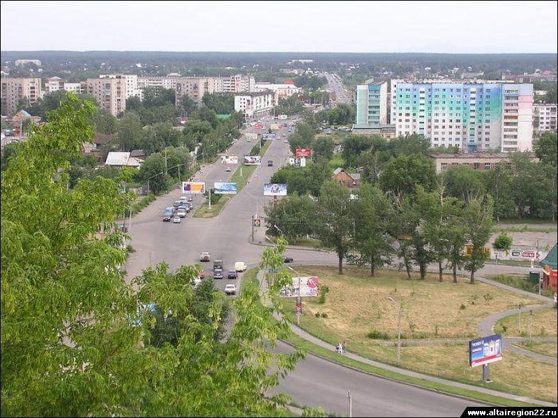

Город Бийск находится в Алтайском крае, на склоне Бийско-Чумышской возвышенности.
Бийск
 Подробнее
Город Славгород находится в Алтайском крае России и является центром городского округа Славгород.
Город Бийск находится в Алтайском крае, на склоне Бийско-Чумышской возвышенности.
Город Славгород находится в Алтайском крае России и является центром городского округа Славгород.
История: Первое упоминание о горячих минеральных ключах, принесших славу Белокурихе, датировано 1867 годом. Тогда известный алтайский исследователь Степан Иванович Гуляев опубликовал в газете «Томские губернские ведомости» статью об их целебных свойствах. Так началась история будущего курорта. На протяжении последующих лет его слава росла и укреплялась. В 30-е годы под руководством академика Александра Леонидовича Мясникова шли активные научные исследования радоновой воды и ее эффективности при лечении различных заболеваний. В годы Великой Отечественной войны Белокуриха стала родным домом для детей «Артека». Бурное строительство курорта шло в 50-60 годы благодаря поддержке видного государственного деятеля, министра среднего машиностроения СССР Ефима Павловича Славского. В 1982 году Белокуриха получила статус города, в 1992 году стала курортом федерального значения.
Население: 15 073 чел.
Географическое положение:Белокуриха расположена в юго-восточной части края (Смоленский район) в 230 км от Барнаула и в 70 км от Бийска. Город-курорт Белокуриха расположен в живописных предгорьях Алтая на высоте 240 – 250 м над уровнем моря, в долине горной реки Белокуриха.
Территория города составляет 92 км². Численность населения по состоянию на январь 2016 г. составляет 15 073 чел. Из них численность населения в трудоспособном возрасте – более 8300 чел.
Климат: Средняя температура января -16°С, июля +20°С. Годовое количество осадков – 700 мм. По количеству солнечных дней в году Белокуриха сопоставима с курортами Крыма и Кавказа – более 260.
История: официально годом основания города Алейска считается 1913 год, когда на строящейся Туркестано-Сибирской железной дороге возник пристанционный поселок. Спустя четверть века, в январе 1939 года, Указом Президиума Верховного Совета РСФСР, пристанционный, а затем рабочий поселок, Алейск стал городом.
Развитию Алейска способствовало развитие в стране пищевой и перерабатывающей отраслей. В 1926 году здесь был построен механизированный маслозавод с паровым двигателем, в 1931 г. – сахарный завод, год спустя – мельзавод мощностью 5 тыс. тонн продукции в год.

Население: 28528 чел.
Географическое положение:современный Алейск расположен в центральной части края, в 120 км к юго-западу от Барнаула. Территория города занимает 4387 га.
Климат: средняя температура января –17,6°C, июля +20,3°C.
История: В 1730 году посланцы известного уральского заводчика Акинфия Демидова, занятые поисками удобного места постройки нового завода, выбрали устье реки Барнаулки. Выбор оказался довольно удачный. Заводы того времени были крайне зависимы от воды, приводившей в движение машины и механизмы. Необходим был также и лес – из него выжигали древесный уголь для медеплавильного производства.
На Алтае была найдена серебряная руда, и в 1747 году императрица Елизавета Петровна издает указ, которым значительные территории юга Западной Сибири были превращены в царское поместье. В XVIII-первой половине XIX века на Алтае выплавляли 90% российского серебра. Поэтому не случайно Барнаул за короткое время из небольшого заводского посада стал в 1771 году «горным городом» - одним из крупнейших в Сибири.
В Барнауле развивалось и другое производство. В 1864 году на левом берегу речки Пивоварки инженер М.Б. Пранг открыл первый в России содовый завод, проработавший около полувека. Более десяти сортов пива выпускали три пивоваренных завода, вырабатывались колбасные и кондитерские изделия. И все же Барнаул оставался городом торговым: в 1912 г. здесь насчитывалось более 500 магазинов и лавок, в которых вели торговлю купцы Морозовы, Смирновы, Суховы, Поляковы, Сбитневы, Поскотиновы и многие другие.
В 1932 году в Барнауле был заложен крупнейший в Западной Сибири меланжевый комбинат.
Во время Великой Отечественной войны в Барнауле разместилось около ста промышленных предприятий из Москвы, Ленинграда, Одессы, других городов, временно оккупированных фашистскими войсками. Именно в это время в городе стали работать крупные машиностроительные предприятия – заводы «Трансмаш», котельный, станкостроительный, выпустил первую продукцию радиозавод.
Население:700326 чел.
Географическое положение: Барнаул – административный центр Алтайского края. он расположен на северо-востоке Приобского плато, на левом берегу Оби в месте впадения реки Барнаулки в Обь.
Климат: средняя температура января -17,5 С, июля +19,8 С. Годовое количество осадков – 477 мм.
История: город Бийск Алтайского края – один из 6 городов России и единственный за Уралом, основанный по именному Указу императора Петра Великого как форпост, имевший важное военно-стратегическое значение. Это произошло в 1709 году. В конце XIX - начале XX вв. Бийск становится крупным торгово-купеческим центром юга Сибири, торгующим с Англией, Францией, Германией.
Решением Правительства от 21 ноября 2005 г. городу Бийску присвоен статус наукограда Российской Федерации.
Бийск входит в Союз исторических городов РФ. В нем 272 памятника архитектуры, истории и культуры, около 50 памятников археологии, 11 памятников природы. По его территории в III тысячелетии до н.э. проходило северное ответвление Великого Шёлкового пути. Здесь же в начале XX в. была открыта палеолитическая стоянка древнего человека. 
Из Бийска берёт начало легендарный Чуйский тракт. С официальным присвоением ему в 1922 году статуса дороги государственного значения практически все экспортно-импортные связи России и Монголии осуществляются через этот город. Бийск – ворота Горного Алтая, с которых начинаются все горные туристические маршруты. Через Бийск ежегодно проезжает более 2 млн туристов. Отсюда идут дороги на всемирно известные Телецкое озеро, гору Белуху, курорты Чемал и Белокуриха, плато Укок.
Население:213559 чел.
Географическое положение:Бийск расположен в юго-восточной части Алтайского края на реке Бия, недалеко от её слияния с рекой Катунь. Город находится на юго-западном склоне Бийско-Чумышской возвышенности. Часть города расположена на левом низменном берегу, примыкая к сосновым борам. Расстояние до города Барнаула - 163 км.
Климат: климат г. Бийска резко-континентальный, характеризующийся суровой зимой с устойчивым снежным покровом, коротким теплым летом, короткой сухой весной с поздним возвратом холодов, непродолжительной осенью с ранними заморозками.
История: в 1886 году было основано село Рубцово близ сёл Оловянишниково и Половинкино. В 1892 году жители получили разрешение на пользование землей. Этот год считается годом основания Рубцовска. В 1927 году Рубцовск получил статус города. Его росту способствовало строительство железной дороги Новониколаевск - Семипалатинск. В военные годы на его территорию было эвакуировано множество предприятий из европейской части страны – Одесский завод сельскохозяйственного машиностроения и Харьковский тракторный завод положили начало заводам «Алтайсельмаш» и «Алттрак».
Население: 146394 чел.
Географическое положение:город расположен в степной зоне на юге Алтайского края, на берегу реки Алей (приток Оби), в 290км от Барнаула.
Климат: климат континентальный. Средняя температура января −17,5 °C, июля +20,5 °C. Среднегодовое количество осадков – 370 мм.
История: Славгород основан в 1910 году. Статус города получил в 1914 году. В 1916 к Славгороду была подведена железная дорога, соединяющая его с Транссибирской магистралью. В 1920-1930 гг. кроме железнодорожных мастерских созданы чугунолитейный завод, предприятия по переработке сельхозпродукции, ремонту сельхозинвентаря. В начале Великой Отечественной войны в Славгород эвакуированы машиностроительный завод из Серпухова (завод кузнечно-прессового оборудования) и Перекопский бромный завод (ПО "Алтайхимпром"). В период послевоенных пятилеток образованы крупные предприятия: завод радиоаппаратуры, швейная и мебельная фабрики, мясокомбинат, молочно-консервный комбинат, общестроительный трест.
Население: 40649 чел.
Географическое положение:расположен город в северо-западной части Алтайского края, в центре Кулундинской степи. Расстояние от Барнаула по железной дороге – 394 км, по автотрассе – 495 км.
Климат: резко-континентальный климат. Средняя температура января -18,9, июля +20,8. Годовое количество осадков - 298 мм.